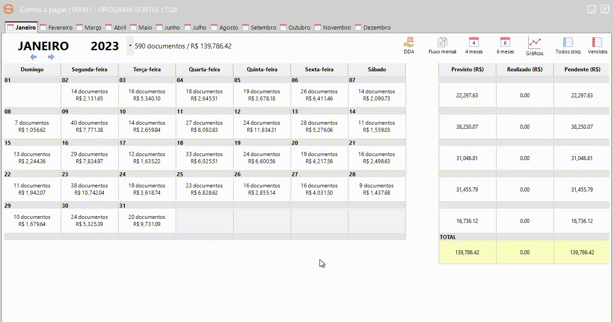
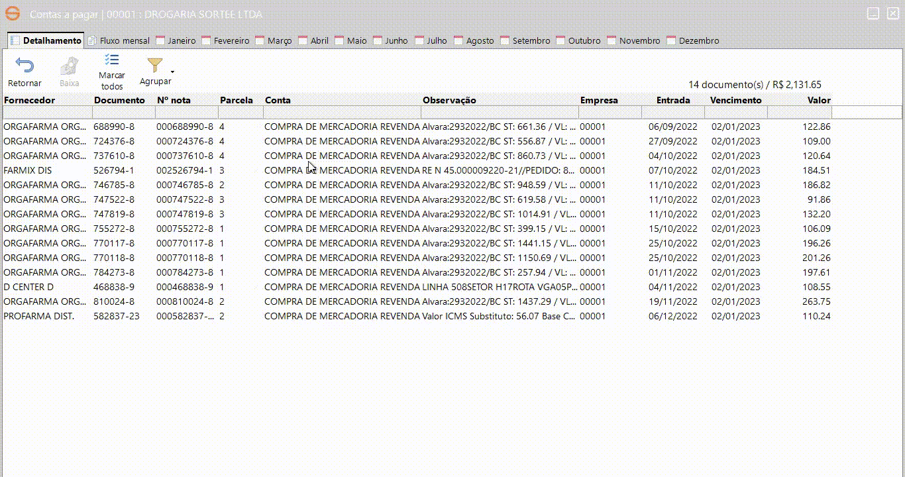
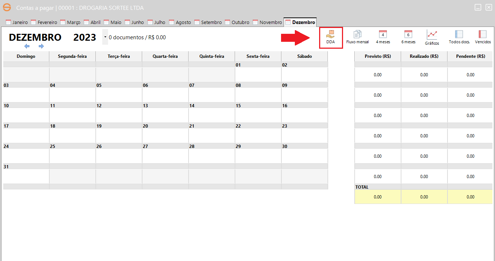
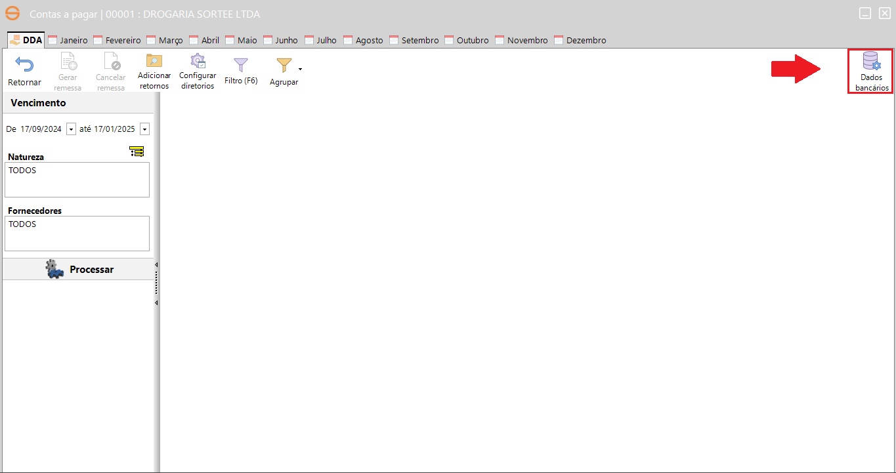
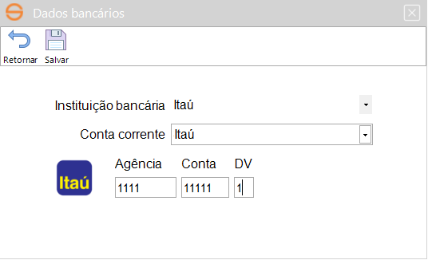
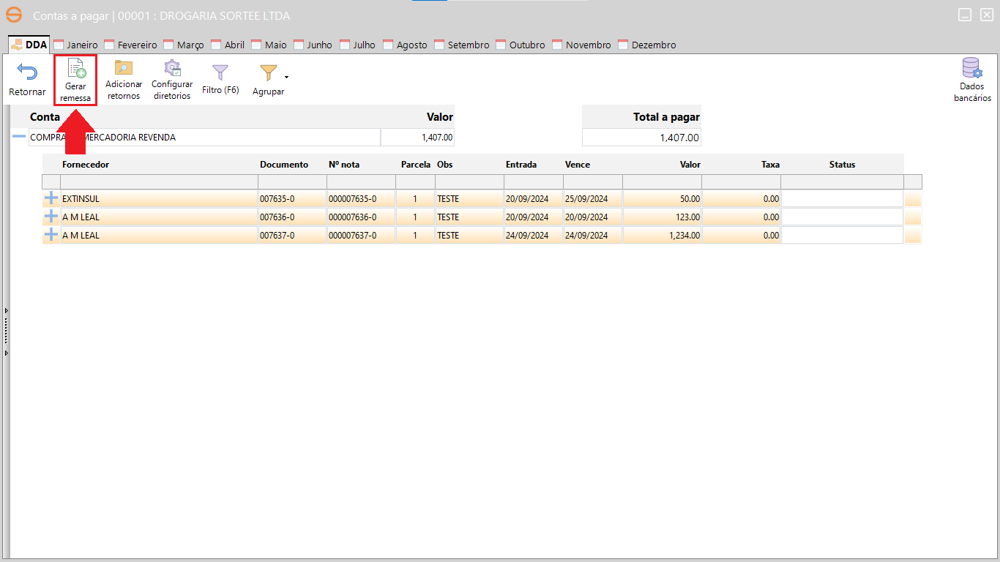
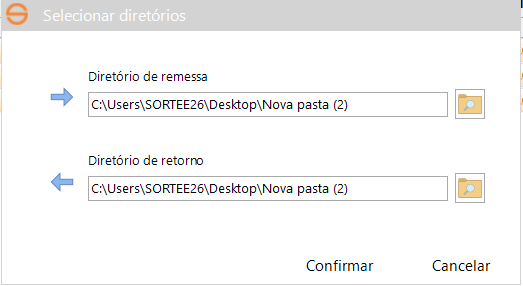
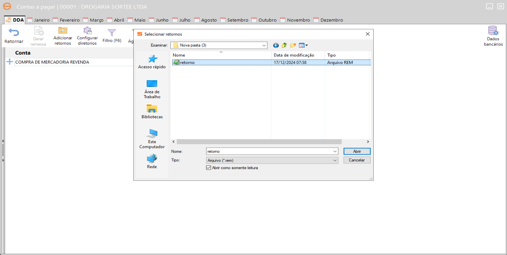

Neste tópico, são apresentadas as contas a pagar de fornecedores. Agora, de forma mais dinâmica e consolidada, o novo módulo de contas a pagar oferece gráficos e calendários que facilitam a visualização da previsão de valores a pagar, contas já quitadas e pendências de pagamento.
Ao acessar o novo contas a pagar, presente no menu Movimentação -> a) Contas a pagar -> a) Contas a pagar, será processado todo o período de movimentação e ficarão visíveis apenas os meses que contenham documentos pendentes.

Atenção: Os valores do documento podem ser alterados, com um duplo clique no ícone de etiqueta, localizado ao lado do campo Valor total pago será habilitada a alteração.

O DDA (Débito Direto Autorizado) é uma solução tecnológica desenvolvida para facilitar a gestão de pagamentos de boletos eletrônicos. Por meio deste sistema, os clientes podem consultar e pagar boletos diretamente em um ambiente digital, reduzindo a necessidade de impressão de documentos físicos e contribuindo para a sustentabilidade.
O Itaú utiliza o intercâmbio eletrônico de arquivos para o funcionamento do DDA. Esse processo ocorre através da geração de um arquivo no formato CNAB 240, contendo informações de todos os documentos selecionados pelo cliente na aba DDA do sistema de Contas a Pagar.
1-Abra o sistema de Contas a Pagar e clique no ícone "DDA", localizado no menu superior.

2-No canto superior direito, clique no ícone "Dados Bancários".

3-preencha as informações do cliente e salve as alterações.

4-Filtre os documentos por data, selecione os documentos a serem pagos e clique em "Gerar remessa"

5-Escolha dois diretórios: um para a remessa e outro para o retorno. Solicite ao cliente que indique um local adequado para o armazenamento dos arquivos, podendo ser alterado posteriormente

6-O diretório de remessa será aberto e nele será gerado um arquivo de extensão ".rem".
7-Acesse o Internet Banking do Itaú e siga o caminho: Rota > Mais > Transmissão de Arquivos > Remessa > Enviar. Selecione o serviço SISPAG, insira o arquivo .rem criado anteriormente e faça o envio da remessa.
8-Todos os pagamentos enviados em ambiente de produção devem ser autorizados. Para isso, acesse: Contas a Pagar > Autorizar Pagamentos.
9-Todos os pagamentos enviados em ambiente de produção devem ser autorizados. Para isso, acesse: Contas a Pagar > Autorizar Pagamentos.Atenção: o documento de retorno não estará disponível imediatamente. Ele será disponibilizado a partir de 1 dia útil da efetivação do pagamento.
10-No sistema de Contas a Pagar, clique no ícone "Adicionar Retornos" para processar o arquivo de retorno. Este processo é importante para efetivar a baixa do documento no sistema.
